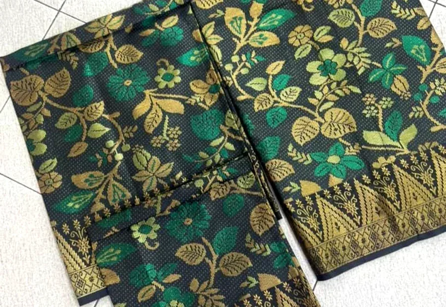
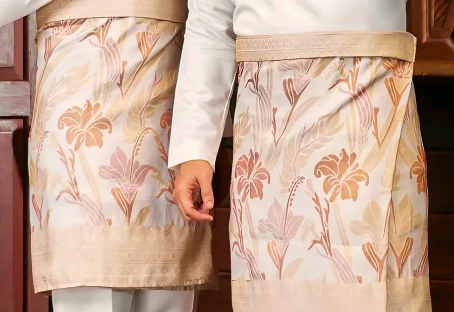
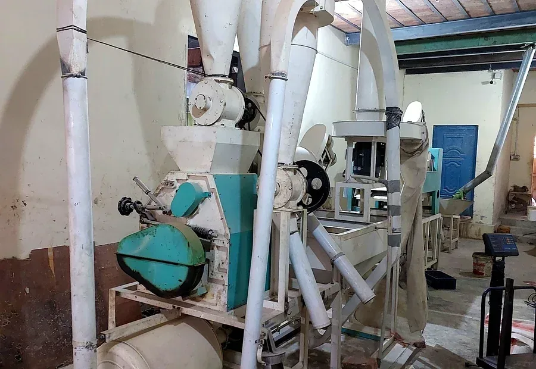
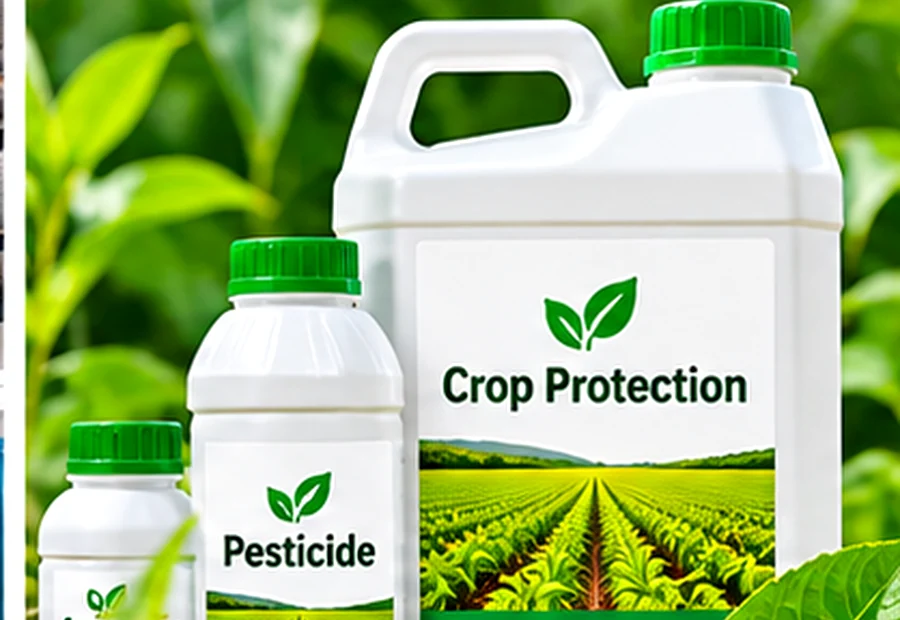

Global Trade.
Trusted Partnerships.
Connecting businesses with products, suppliers and opportunities across international markets.
WITH TRUST
Products and sectors
we work across.
Real photographs from our textile and machinery activities, complemented by representative imagery for agricultural products, crop protection and fresh produce.

Textile FabricsTextile materials and products
Textile ProductsFinished fabrics and apparel
Industrial MachineryProcessing and milling equipment Agricultural ProductsCrop inputs and agricultural supplies
Agricultural ProductsCrop inputs and agricultural supplies

Pesticides & FungicidesCrop protection products Fresh FruitsProduce for export markets
Fresh FruitsProduce for export markets
Agriculture, crop-protection and fruit visuals are representative illustrations, not photographs of specific inventory. Actual products, brands, specifications and availability are confirmed for each enquiry.
A closer look at textile operations.
A short look inside a textile yarn and weaving facility, included to illustrate the textile sector in which we trade.
Trade built on clarity, commitment and connection.
Established in 2003, K.K. International is a Pakistan-based sole proprietorship engaged in international import, export, wholesale trading and sourcing.
Our activities span textile yarn, industrial machinery, agricultural products, crop-protection products, textiles, rice, fresh fruits, safety matches and other merchandise. Our trading relationships extend across Asia and neighbouring markets.
More about our company →One partner. Multiple possibilities.
Flexible trading capabilities designed to serve evolving business needs and product categories.
Agriculture &
Crop Protection
Agricultural products, fertilizers, pesticides and fungicides.
↗ 02 /Textile &
Industrial
Textile yarn, textile products and industrial machinery.
↗ 03 /Food &
Commodities
Rice, fresh fruits, safety matches and other export products.
↗ 04 /Global Sourcing &
Trade
Import sourcing, export marketing and wholesale trade.
↗A considered approach to every transaction.
Good trade starts with understanding the requirement. We aim to keep the process clear, coordinated and commercially practical.
Explore our trade approach →Understand
Clarify product specifications, quantities, destination and commercial requirements.
Source
Identify suitable supplier options and gather relevant product and trade information.
Coordinate
Align documentation, supply arrangements and communication between parties.
Build relationships
Work toward dependable, long-term business relationships through professional dealings.